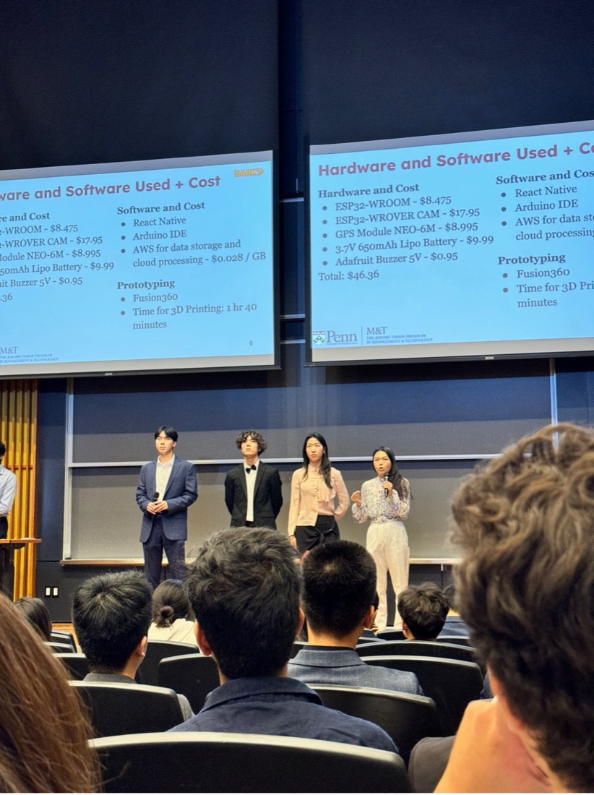
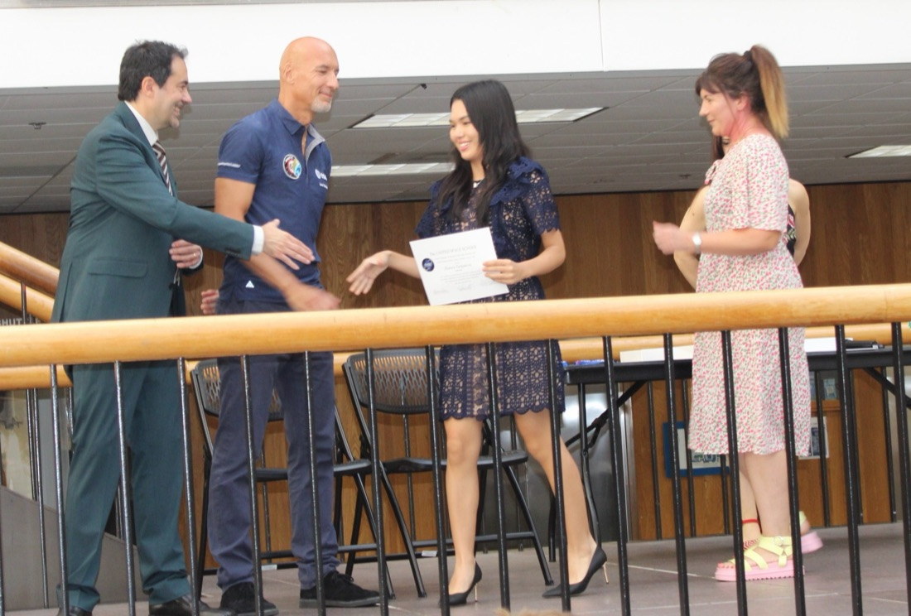
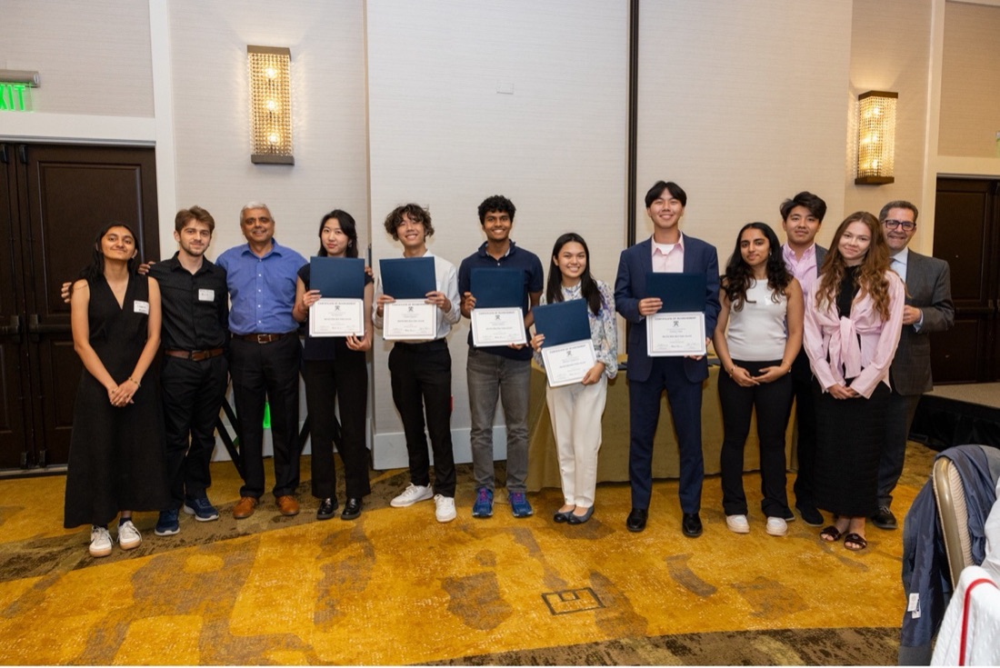

Zhaniya Turganova
Electrical Engineering, Georgia Tech
I study electrical engineering at Georgia Tech and work on the hardware beneath computing: electronic materials, devices, and chip physical design.
I research ferroelectric devices in the Garten Laboratory. With Silicon Jackets I implemented a 64-bit SRAM-backed datapath from RTL to DRC/LVS-clean GDSII, and qualified an open-source SRAM macro for a SKY130 CPU tapeout.
In summer 2026 I was a Materials & Process Engineering Intern at Piper Aircraft.
Earlier, I conducted a pilot study of an AI assistant for long-duration space missions, tested metakaolin geopolymers as part of lunar construction research, and published a peer-reviewed review on neuropathic pain.
A map of my fields
My work sits where fields overlap. Select any point for the full story.
Photos






Education
B.S. Electrical Engineering — Georgia Tech2029
Electronic Devices & Circuit Technology thread · Minor in Quantum Sciences & Technology · GPA 3.91 · Expected May 2029 · Atlanta, Georgia
Relevant coursework: Digital Design; Signal Processing; Circuit Analysis; C & Assembly Programming; Engineering Materials; MATLAB / Computing for Engineers; Calculus; Differential Equations; Linear Algebra; Physics I–II (Mechanics and Electromagnetism); General Chemistry I–II.
Non-credit study: Electrical, Optical & Magnetic Properties of Materials (MSE 3015).
Technical training:
- Cadence Digital Design & Signoff course.
- Georgia Tech Microfabrication course at the Marcus Center for Nanotechnology, covering semiconductor cleanroom procedures and lithography-to-deposition device fabrication process flow.
Research
2D ferroelectrics — Garten Lab & Heterostructure VIP2026–
Ferroelectric Devices
Undergraduate Researcher · Garten Laboratory, Georgia Institute of Technology · August 2026 – Present
MBE Growth & 2D Materials
Undergraduate Researcher · 2D Heterostructure Vertically Integrated Project (VIP), Georgia Institute of Technology · January – May 2026
Skills & concepts: Two-dimensional semiconductors; InxSey; molecular beam epitaxy (MBE) literature and process research; SolidWorks; 3D CAD; deposition-mask design; mechanical exfoliation; flake transfer; automated laboratory tooling; Arduino-based control; sapphire and silicon substrates; growth flux ratios; substrate temperature; phase stabilization; in-situ machine learning and artificial intelligence for growth-process control.
- Built an automated tool for mechanical exfoliation and transfer of InxSey flakes from sapphire onto silicon, incorporating Arduino-based actuation/control.
- Designed MBE deposition masks in SolidWorks to specify sample geometry and deposition patterns.
- Conducted literature research on MBE growth of InxSey, reviewing flux ratios, substrate temperatures, phase stabilization, and structural characterization reported in published studies.
- Investigated published methods for using in-situ machine learning/artificial intelligence to monitor and control thin-film growth.
Scope: Tool construction, mask design, and growth-method research.
Organic semiconductor devices — Facchetti Lab
Undergraduate Researcher · Facchetti Laboratory, Georgia Institute of Technology
Skills & concepts: Cleanroom semiconductor fabrication; organic thin-film transistors (OTFTs); photolithography; mask alignment; electron-beam gold evaporation; spin coating of conducting polymers; Signatone probe station; transistor electrical characterization; transfer curves; transconductance; n-type and p-type behavior; electrolyte-gated transistor physics; organic electrochemical transistors; neuromorphic hardware concepts.
- Fabricated organic thin-film transistor structures through photolithographic mask alignment, electron-beam evaporation of gold electrodes, and spin coating of conducting polymers.
- Used a Signatone probe station to acquire transistor electrical measurements and transfer curves.
- Extracted transconductance and examined transfer characteristics to evaluate transistor operation and n-type/p-type polarity.
- Studied electrolyte-gated transistor physics and potential neuromorphic applications of organic electrochemical transistors.
Sustainable steel & commercialization — Kacher Lab
Undergraduate Researcher · Kacher Laboratory, Georgia Institute of Technology
ARPA-E-funded ROSIE sustainable steel research
Skills & concepts: Thermogravimetric analysis (TGA); differential scanning calorimetry (DSC); hydrogen reduction of iron oxide; phase transformations; thermal analysis; reduction mass loss; scanning electron microscopy (SEM); energy-dispersive X-ray spectroscopy (EDS); metallographic preparation; casting; heat treatment; sectioning; mounting; grinding; polishing; stainless-steel density measurements; ImageJ grain-size analysis; microstructural feature extraction; customer discovery; technical commercialization; ultra-high-purity (UHP) semiconductor gas delivery systems; hydrogen precooling heat exchangers.
- Perform TGA and DSC measurements to characterize thermal behavior and phase transformations during hydrogen reduction of iron oxide for the ARPA-E ROSIE project.
- Analyze TGA mass-loss measurements to quantify reduction extent and follow changes during the reduction process.
- Conduct SEM imaging and EDS elemental analysis to evaluate microstructural and compositional differences across reduction stages.
- Perform stainless-steel density measurements as part of materials characterization.
- Complete metallographic sample preparation workflows, including casting, heat treatment, sectioning, mounting, grinding, and polishing.
- Use ImageJ for grain-size measurement and extraction of quantitative microstructural features.
- Study commercial applications for the relevant research and materials technologies, including hydrogen precooler heat exchangers and semiconductor ultra-high-purity gas delivery systems.
- Lead customer-discovery and market-validation work, holding technical/commercial conversations with engineering teams at NASA and Blue Origin to identify requirements and potential applications.
Materials characterization — Materials Innovation & Learning Lab
Laboratory Staff · Materials Innovation & Learning Lab, Georgia Institute of Technology
Skills & instruments: Instron mechanical testers; Mark-10 force measurement; microhardness testing; DSC; TGA; infrared thermography; UV–Vis spectrophotometry; contact-angle goniometry; specimen preparation; equipment setup; instrument maintenance; laboratory procedures; user training.
- Support laboratory users in operating Instron and Mark-10 mechanical testing systems, microhardness testers, DSC/TGA systems, infrared cameras, UV–Vis spectrophotometers, and contact-angle goniometers.
- Assist with instrument setup, specimen preparation, experimental measurements, and maintenance.
- Provide user support and training on instrumentation and standard laboratory procedures.
Neuropathic pain — Lumiere Research Foundation2024
Researcher · Lumiere Research Foundation · Published 2024
Research mentorship: Georgetown University; Dr. Safwan Hyder
Skills & concepts: Peer-reviewed literature synthesis; scientific writing; peripheral and central sensitization; TRP ion channels; voltage-gated sodium (Nav) channels; ectopic neuronal firing; collateral sprouting; sympathetic–sensory coupling; NMDA-mediated plasticity; spinal cord reorganization; microglia; astrocytes; neuroinflammation; spinal cord stimulation; dorsal root ganglion (DRG) stimulation; pharmacological pain treatment.
- Received a Lumiere Inclusion Foundation research scholarship.
- Authored the approximately 7,500-word, peer-reviewed review “Neuropathic Pain: Mechanisms and Treatment Approaches,” published in the National High School Journal of Science (2024).
- Reviewed peripheral pain mechanisms, including Nav and TRP channel dysregulation, ectopic firing, collateral axonal sprouting, and sympathetic–sensory coupling.
- Analyzed central pain processing, including NMDA receptor-mediated sensitization, spinal cord plasticity/reorganization, and neuroinflammatory activity involving microglia and astrocytes.
- Compared pharmacological and neuromodulation treatments, including spinal cord stimulation and dorsal root ganglion stimulation, in relation to underlying neuronal pathways and current treatment limitations.
Research type: Literature review and synthesis.
Neuroeconomics in spaceflight — Cambridge Centre for International Research
Researcher · Cambridge Centre for International Research
Research mentorship: Dartmouth University professor
Skills & concepts: Neuroeconomics; prospect theory; subjective value functions; probability weighting; decision framing; reward valuation; decision-making under uncertainty; nucleus accumbens (NAcc); dorsal anterior cingulate cortex (dACC); ventromedial prefrontal cortex (vmPFC); microgravity-associated neurophysiology; striatal dopamine D1/D2 receptor signaling; risk perception; scientific literature synthesis.
- Received a research scholarship for an independent investigation into astronaut decision-making under spaceflight-associated neurophysiological conditions.
- Authored “Neuroeconomics in Orbit,” a paper on astronaut decision-making through prospect theory and space-induced neurophysiological changes.
- Mapped prospect-theory components—subjective valuation, probability weighting, and decision framing—to neural systems involving the NAcc, dACC, and vmPFC.
- Evaluated literature on the possible relationship between microgravity, altered dopamine D1/D2 receptor signaling, prefrontal activity, risk perception, and reward processing.
- Discussed implications for decision-making under uncertainty in long-duration missions where crew autonomy may increase.
Research type: Independent theoretical and literature research.
Industry
Materials & Process Engineering Intern — Piper Aircraft2026
Materials & Process Engineering Intern · Piper Aircraft · Vero Beach, Florida, USA · June – August 2026
Engineering teams
Physical design — Silicon Jackets
Physical Design Engineer · Silicon Jackets, Georgia Institute of Technology
Skills & concepts: Digital hardware design; RTL-to-GDSII; SystemVerilog; SRAM macro integration; Cadence Genus; Innovus; Tempus; Virtuoso; Pegasus; Xcelium; IMC; KLayout; OpenROAD; OpenLane; SKY130; synthesis; floorplanning; power distribution network (PDN) design; placement; clock tree synthesis (CTS); routing; static timing analysis (STA); timing closure; Synopsys Design Constraints (SDC); worst negative slack (WNS); total negative slack (TNS); design rule checking (DRC); layout-versus-schematic (LVS); SRAM compiler views; GDS; LEF; SPICE; Liberty timing models; verification scripting; Tcl; Python; UVM-style constrained-random testing; functional coverage.
64-bit SRAM-Backed Datapath: RTL-to-GDSII
- Implemented a 64-bit SRAM-backed datapath from RTL to DRC/LVS-clean GDSII, including integration of two CF_SRAM_1024x32 SRAM hard macros.
- Executed the digital implementation flow with Cadence Genus, Innovus, and Tempus: synthesis, floorplanning, PDN, placement, CTS, detailed routing, timing analysis, and physical signoff.
- Performed timing closure through iterative constraint and implementation optimization, improving setup WNS from −2.701 ns to +0.01 ns.
- Increased the calculated maximum clock frequency from 270 MHz to 943 MHz; this is a timing-analysis result, not a measured fabricated-chip clock frequency.
- Developed Tcl/Python scripts to analyze critical paths and track WNS/TNS across place-and-route iterations.
- Debugged and eliminated 1,000 routing DRC violations, including 997 MET1/MET2 shorts near SRAM macro pin-access regions.
- Applied macro-placement halos, routing blockages, and use of additional routing layers to resolve congested macro interfaces.
- Resolved connectivity errors to reach LVS closure.
- Developed SystemVerilog RTL containing a seven-state finite-state machine (FSM) and a parameterized 32-bit adder.
- Built a UVM-style constrained-random testbench containing seven assertions.
- Achieved 98.94% functional coverage, with all assertions passing, in Cadence Xcelium/IMC.
SRAM22 Macro Qualification for SKY130 CPU Tapeout
- Investigated and qualified the open-source SRAM22 memory compiler as a no-cost alternative to commercial ChipFoundry SRAM hard macros for a SKY130 CPU tapeout.
- Generated and integrated a 64 × 32 SRAM macro, including GDS, LEF, SPICE, and three-corner Liberty views.
- Verified correct mapping for 39 of 40 Cadence PDK layers.
- Established the team's first Cadence Pegasus DRC flow using the 597-rule SkyWater signoff deck.
- Debugged more than 1,000 apparent MET1/MET2 spacing violations that resulted from Virtuoso substituting 21,610 via cells during GDS stream-in.
- Established direct GDS merging as the integration procedure to avoid import-induced layout corruption.
- Reviewed remaining DRC flags to distinguish genuine layout problems from foundry bitcell exceptions, chip-level density checks, and a 0.13 µm implant-marker artifact.
- Examined and modified SRAM22 GDS geometries in KLayout.
- Cross-checked SRAM22 with zero DRC violations across 259 KLayout rules.
- Obtained LVS correspondence for 4,091 peripheral transistors, 1,916 nets, and 80 pins.
- Debugged four SPICE netlist incompatibilities involving device naming, subcircuit transistor definitions, wrapper cells, and width multipliers.
- Created reusable Python netlist preprocessing routines to address those incompatibilities.
- Automated DRC/LVS verification in a single-command workflow, including technical documentation and onboarding instructions.
- Compared OpenROAD and Cadence Innovus place-and-route workflows and benchmarked floorplanning/PDN strategies in OpenLane.
Low-voltage electronics — HyTech Racing, Formula SAE
Low-Voltage Electrical Engineer · HyTech Racing, Formula SAE, Georgia Institute of Technology
Skills & concepts: Altium Designer; schematic capture; component libraries; custom schematic symbols; SOIC-8 footprints; two-layer PCB design; PCB placement and routing; LM555 timer; astable oscillator topology; RC timing calculations; 2–5 Hz flashing circuits; LEDs; 0603 surface-mount packages; USB-C 5 V input; device-side USB-C configuration; decoupling; GND planes; 5 mil trace widths; solder-mask apertures; board mechanical constraints; JLCPCB design rules; Formula SAE Ready-to-Move requirements; op-amps; MOSFETs; analog-to-digital converters; microcontrollers; comparator design.
Formula SAE Ready-to-Move (RTM) Indicator PCB
- Designed a two-layer RTM indicator PCB in Altium Designer, adapting the vehicle's circuit for the flashing amber light required by current Formula SAE rules.
- Configured an LM555 in astable mode to drive six 0603 LEDs, targeting a 2–5 Hz flash rate with 53% duty cycle.
- Calculated timing resistances and capacitances from the LM555 datasheet and checked the astable-duty-cycle constraint; the standard resistor configuration could not reach exactly 50% duty cycle without setting Ra = 0.
- Designed a device-facing USB-C input for 5 V, with an input target of up to 3 A, and incorporated local decoupling capacitors.
- Drew a custom LM555 schematic symbol and SOIC-8 PCB footprint from manufacturer dimensional drawings; compiled both into an integrated Altium library.
- Designed a rounded custom board outline with a 200 mil mounting hole.
- Placed the six LEDs on the top in the HyTech logo arrangement, with other components on the reverse side.
- Routed 5 mil traces using vias, added a bottom-layer ground copper pour, and created solder-mask openings over copper to form an exposed metallic logo.
- Completed design rule checks against JLCPCB manufacturing constraints, passing checks before electrical-lead signoff.
- Completed HyTech electrical training in circuit fundamentals, op-amps, MOSFETs, ADCs, and microcontrollers.
- Completed an Altium training module designing an op-amp comparator with a resistive divider threshold and an LED current-limiting resistor.
Development stage: PCB designed and design-rule checked.
iOS prototype & venture — M&T Summer Institute, Penn2024
Software Engineer & UI/UX Designer · Management & Technology Summer Institute, Penn Engineering & Wharton, University of Pennsylvania · July – August 2024
Skills & concepts: Swift; iOS application prototyping; user-interface design; user-experience design; screen layouts; application navigation; product strategy; business-model development; startup formation; market sizing; unit economics; company valuation; capital markets; IPO simulation.
Smart Dog Collar iOS Application and Venture
- Selected as 1 of 75 participants from more than 1,000 applicants for the University of Pennsylvania Management & Technology Summer Institute.
- Developed a Swift-based iOS app prototype for a smart dog collar, designing its UI/UX, screen layouts, navigation, and user interaction flow.
- Worked on a business plan for the product, applying startup formation, market sizing, pricing/business-model analysis, and unit economics.
- Participated in a team recognized as one of five award-winning teams among 15 teams.
- Completed a Google IPO simulation at Morgan Stanley's New York headquarters, studying technology-company valuation, public offerings, capital markets, and investment banking.
Aerospace & interdisciplinary
Nanosatellite engineering — UniSAT2024
Selected Participant · UniSAT Nano-Satellite Programme · 2024
Selection: 1 of 20 participants
Skills & concepts: Nanosatellite assembly; spacecraft subsystems; 3D CAD modeling; PCB design; Internet of Things (IoT); onboard data acquisition; sensors; spacecraft instrumentation; embedded-system integration.
- Participated in nanosatellite assembly and subsystem development, using 3D CAD models and PCB/IoT design concepts in spacecraft hardware integration.
- Designed and tested onboard data-collection sensors for nanosatellite instrumentation and sensing applications.
Lunar habitat materials & structures — Nazarbayev University2024–25
Researcher · Nazarbayev University · August 2024 – April 2025
Skills & concepts: Alkali-activated aluminosilicate binders; geopolymers; metakaolin; sodium hydroxide activators; 1–4 M NaOH solutions; setting-time measurements; penetration testing; compressive strength testing; geopolymerization; curing; lunar regolith; lunar in-situ resource utilization (ISRU); low-water construction; additive manufacturing; lunar habitat design; Lagrange multiplier optimization; Taylor-series approximation; sensitivity analysis.
Lunar Regolith Geopolymer Concrete: Materials Processing & Mechanical Characterization
- Investigated geopolymer construction materials for lunar in-situ resource utilization (ISRU), drawing on published research into SiO2/Al2O3-rich lunar regolith precursors and 3D-printable construction methods.
- Conducted a controlled metakaolin-based experimental study of 36 geopolymer specimens across four sodium hydroxide activator molarities (1 M, 2 M, 3 M, and 4 M).
- Investigated initial/final setting times using penetration-based testing and measured compressive strength at 7, 14, and 21 days of curing.
- Used a YES-2000 digital compression testing system for mechanical testing.
- Analyzed the effect of NaOH concentration on precursor dissolution, geopolymerization kinetics, strength development, and processing workability.
- Measured 7-day / 14-day / 21-day compressive strengths (MPa) of 2.6 / 3.5 / 4.3 (1 M); 4.9 / 6.8 / 7.6 (2 M); 6.3 / 8.1 / 9.9 (3 M); and 9.1 / 12.1 / 15.7 (4 M).
- Recorded a highest 21-day compressive strength of 15.7 MPa at 4 M, compared with 4.3 MPa at 1 M.
- Identified the processing tradeoff between higher strength at greater NaOH concentration and shorter available working/setting times.
- Examined the relevance of geopolymerization, low-water production, and additive manufacturing for lunar habitat construction through a separate literature review.
- Reviewed research on vacuum exposure, thermal cycling, curing constraints, radiation shielding, mechanical durability, and water-reducing admixtures in potential lunar applications.
Scope: Strength tests used metakaolin, not lunar regolith. Lunar-environment performance and regolith printing were studied through literature.
Lunar Dome Stress Analysis & Structural Optimization January 2025
- Applied Lagrange multipliers to formulate constrained optimization problems for hemispherical lunar habitat geometry and structural design requirements.
- Used Taylor-series approximations and sensitivity analysis to examine the effects of dimensional tolerances on geometries proposed for 3D-printed lunar dome structures.
Mars mission materials selection — United Space School2025
Materials Selection Lead · United Space School, conducted in connection with the NASA Johnson Space Center community · April – August 2025
Selection: 1 of 40 international delegates; sole representative of Kazakhstan
Skills & concepts: Thermal protection systems (TPS); atmospheric entry; inflatable aerodynamic decelerators; crewed Mars landers; carbon–carbon composites; refractory metal alloys; high-temperature structural materials; thermal conductivity; ablation resistance; specific mass; aerothermal loading; CAD; computational fluid dynamics (CFD); thermal analysis; thermal-structural material selection.
- Led materials-selection work for thermal protection systems on inflatable aerodynamic decelerators and crewed Mars landers during an interdisciplinary Mars mission design program.
- Compared carbon–carbon composites and refractory metal alloys in terms of thermal conductivity, ablation resistance, structural integrity at high temperature, and weight constraints.
- Used CAD and CFD-based thermal analyses to examine entry-related aerothermal loading and inform material choice for landing/deceleration structures.
Program: An educational Mars mission design program.
AI for space missions — University of Hawai‘i at Mānoa2023–24
AI Researcher · University of Hawai‘i at Mānoa · 2023–2024
Research mentorship: Dr. Peter Washington; additional guidance from Dr. Kimberly Binsted, University of Hawai‘i at Mānoa professor and principal investigator of NASA-funded Hawai‘i Space Exploration Analog and Simulation (HI-SEAS).
Skills & concepts: Large language models (LLMs); Alpaca-7B; domain fine-tuning; psychologist–patient conversational data; natural language generation; contextual response generation; web-interface development; speech-to-text interaction; audio responses; human–computer interaction (HCI); embodied human–robot interaction; user-experience testing; IRB-approved human-subjects research; semi-structured interviews; qualitative thematic analysis; independent coding and adjudication; conversational memory; communication delay; human factors for isolated and confined environments.
LorelAI: Conversational AI for Long-Duration Space Missions
- Developed LorelAI, an AI conversational assistant intended to investigate psychological and social-support applications for astronauts in long-duration missions.
- Fine-tuned the Alpaca-7B language model on publicly available psychologist–patient conversational datasets for more context-sensitive and supportive interactions.
- Developed a web-based interface supporting speech input, AI-generated text, and spoken audio responses.
- Developed and tested a physical robotic prototype to study embodied conversational interaction.
- Conducted an IRB-approved pilot study through the University of Hawai‘i at Mānoa (protocol 2023-00760).
- Recruited eight participants: four specialists from Kazakhstan's Republican Center for Space Communications and four former HI-SEAS Mars analog participants.
- Organized participant interactions and feedback sessions, including approximately 30–60 minutes of conversation/testing per participant after introduction to the system.
- Evaluated conversational response quality, interaction delay/latency, voice naturalness, verbosity, UI/UX, and overall usability for astronaut-related support scenarios.
- Gathered interview and feedback data concerning emotional recognition, personalization, voice customization, conversation history, hands-free operation, social connection to Earth, entertainment, and crew cohesion.
- Performed qualitative thematic analysis of responses, using independent coding of participant feedback and reconciliation of themes.
- Examined the potential need for autonomous local operation in settings where Earth communication may be delayed.
- Co-authored a research manuscript of more than 11,000 words, “Design Recommendations for Interactive Mental Health Chatbots Used in Space Missions: A Pilot Study.”
- Translated pilot-study findings into design recommendations for future astronaut-facing conversational support tools.
Scope: Small pilot study (n = 8) with former HI-SEAS analog participants and space-communications specialists.
ALS research proposal — Yale Young Global Scholars2023
Participant · Yale Young Global Scholars, Yale University · 2023
Selection: Drawn from an international applicant pool of more than 8,500
Skills & concepts: Molecular genetics; C9ORF72; amyotrophic lateral sclerosis (ALS); neurodegenerative mechanisms; scientific proposal writing; interdisciplinary STEM teamwork.
- Developed a research proposal examining C9ORF72 gene inhibition as a possible therapeutic avenue for amyotrophic lateral sclerosis (ALS).
- Reviewed the proposed relationship between gene activity and neurodegenerative disease mechanisms.
- Participated in advanced science and technology seminars and collaborated with an international team on a capstone research project.
Publications & research writing
- Neuropathic Pain: Mechanisms and Treatment Approaches — National High School Journal of Science. Peer-reviewed review, about 7,500 words2024
- Design Recommendations for Interactive Mental Health Chatbots Used in Space Missions: A Pilot Study — research manuscript, more than 11,000 words
- Metakaolin-based geopolymers and lunar-regolith construction — literature review and experimental documentation
- Lunar dome structural optimization — constrained optimization and sensitivity methods
- C9ORF72 and ALS — research proposal, Yale Young Global Scholars
Honors, scholarships & programs
- TSMC–Georgia Tech STAR Program — 1 of 36 from approximately 300 applicants
- 1517 Fund Flux Capacitor — Finalist
- Rise Global Challenge, Rhodes Trust & Schmidt Futures — Global Finalist
- NASA Space Apps Challenge — First Place
- United Space School — Sole representative of Kazakhstan among 40 international delegates
- Yale Young Global Scholars — Innovations in Science & Technology
- Penn Management & Technology Summer Institute — 1 of 75 from 1,000+; member of one of five award-winning teams among 15
- Forbes Student Research Mentor
- Lumiere Inclusion Foundation — Research Scholarship Recipient
- Cambridge Centre for International Research — Research Scholarship Recipient
- UniSAT Nano-Satellite Programme — 1 of 20 participants
Skills
Chip Design & Verification
HDL & Verification: SystemVerilog, Verilog, SystemVerilog Assertions (SVA), UVM-Style Testbench Architecture, Constrained-Random Verification, Functional Coverage, Finite-State Machine Design, RTL Development.
Electronic Design Automation (EDA): Cadence Genus, Innovus, Innovus Stylus, Tempus, Virtuoso, Pegasus, Xcelium, IMC, OpenROAD, OpenLane, KLayout.
Digital Physical Design: RTL-to-GDSII, Logic Synthesis, Floorplanning, Placement, Clock Tree Synthesis (CTS), Static Timing Analysis (STA), Timing Closure, Power Distribution Network (PDN) Design, Routing, Macro-Aware Routing, DRC/LVS, Physical Signoff.
Memory & Design Integration: SRAM Macro Integration, SRAM Compiler Qualification, GDSII, LEF/DEF, SPICE Netlists, Liberty Timing Models, SDC Constraints, PDK Integration, SKY130.
Design Automation: Tcl, Python, EDA Flow Scripting, Timing Report Analysis, DRC/LVS Automation.
Semiconductor Processing & Microfabrication
Thin-Film Deposition: Physical Vapor Deposition (PVD), Chemical Vapor Deposition (CVD), Electron-Beam Evaporation, Spin Coating, Molecular Beam Epitaxy (MBE) Growth Process Research, Ultrahigh-Vacuum (UHV) Concepts.
Microfabrication: Photolithography, Mask Alignment, Metal Lift-Off, Wet/Dry Etching, Wet Cleaning, Alkaline Processing, Oxygen Plasma Treatment, Mechanical Exfoliation, 2D Material Transfer.
Semiconductor Materials: InxSey, In2Se3, SnSe, Two-Dimensional Semiconductors, Van der Waals Heterostructures, Ferroelectric Materials, Organic Semiconductors, Conducting Polymers.
Device Physics & Fabrication: Ferroelectric Tunnel Junctions, Organic Thin-Film Transistors, Electrolyte-Gated Transistors, Semiconductor Band Diagrams, Electron Transport, Tunneling Behavior, Thin-Film Nucleation, Crystal Phase Control, Substrate Preparation.
Laboratory Practice: Cleanroom Process Procedures, Chemical Handling Protocols, Sample Preparation, Process Documentation, Fabrication Workflow Development.
Materials Characterization & Metrology
Microscopy & Structural Characterization: Scanning Electron Microscopy (SEM; Hitachi SU-8230), Energy-Dispersive X-Ray Spectroscopy (EDS), Transmission Electron Microscopy (TEM), Atomic Force Microscopy (AFM), Optical Microscopy, Raman Spectroscopy.
Crystallographic & Surface Analysis: X-Ray Diffraction (XRD), Reflection High-Energy Electron Diffraction (RHEED), Profilometry, Contact Angle Goniometry.
Electrical Characterization: Signatone Probe Station, Current–Voltage (I–V) Characterization, Transistor Transfer Curves, Transconductance Extraction, Four-Point Probe, Sheet Resistance, LCR Capacitance/Loss Measurements, Ferroelectric Polarization–Voltage (P–V) Hysteresis.
Thermal & Spectroscopic Analysis: Thermogravimetric Analysis (TGA), Differential Scanning Calorimetry (DSC), UV–Visible Spectrophotometry, Fourier-Transform Infrared Spectroscopy (FTIR).
Mechanical Testing & Metrology: Instron Mechanical Testing, Mark-10 Force Measurement, Microhardness Testing, Compressive Strength Testing, Metallographic Sample Preparation, ImageJ, Creaform 3D Structured-Light Scanning, VXelements.
Process, Manufacturing & Quality Engineering
Statistical Methods: Design of Experiments (DOE), Analysis of Variance (ANOVA), Pearson and Spearman Correlation, Statistical Process Control (SPC), Data Analysis.
Process Engineering: Root-Cause Analysis, Process Optimization, Yield Improvement, Defect Investigation, Warpage Analysis, Thermoforming, Thermal Process Mapping.
Materials Engineering: Aluminum Corrosion Analysis, Surface Preparation, Metallography, Phase Transformations, Hydrogen Reduction of Iron Oxides, Polymer Thermomechanical Behavior.
Quality & Qualification: A/B-Basis Material Qualification, FAA Materials Requirements, Design for Manufacturability and Assembly (DFM/DFA), Standard Operating Procedures (SOP), Standard Manufacturing Procedures (SMP), Process Specification Development.
Software & Programming
Languages: Python, C, Assembly, MATLAB, Tcl, Swift, SystemVerilog, Verilog.
Python Scientific Computing: NumPy, SciPy, Pandas, Matplotlib, PyVista.
Visualization & Applications: Three.js, WebGL, Interactive 3D Visualization, iOS Application Prototyping, UI/UX Design.
Automation & AI: Engineering Workflow Automation, AI Coding Tools and Agents, Large Language Model Fine-Tuning, Conversational AI, Speech Interfaces, Human–AI Interaction.
CAD, Simulation & Computational Modeling
CAD & Electronic Design: Siemens NX, SolidWorks, Altium Designer, 3D CAD Modeling, PCB Schematic Capture, PCB Layout and Routing.
Multiphysics & Engineering Simulation: COMSOL Multiphysics, Computational Fluid Dynamics (CFD), Thermal Modeling, Radial Basis Function (RBF) Interpolation, Reduced-Order Thermal Modeling.
Structural & Mathematical Analysis: Constrained Optimization, Lagrange Multipliers, Taylor-Series Approximation, Sensitivity Analysis, Geometric Modeling.
Circuit Design: Analog and Digital Circuits, LM555 Oscillators, RC Timing Networks, Operational Amplifiers, Comparators, MOSFETs, USB-C Integration, PCB Design Rules.
Quantum Computing & Emerging Technologies
Quantum Computing: Qiskit, Quantum Error Correction (QEC), Quantum Sciences & Technology Coursework.
Emerging Devices: Ferroelectric Transistors, Ferroelectric Tunnel Junctions, Two-Dimensional Semiconductor Devices, Organic Electrochemical Transistors, Neuromorphic Computing Concepts.
Research & Scientific Communication
Research Methods: Experimental Design, Literature Review, Scientific Writing, Technical Reports, Qualitative Thematic Analysis, Human-Subject Research, Research Presentations.
Interdisciplinary Research: Semiconductor Materials, Spaceflight Human Factors, Human–Computer Interaction, Neuroscience, Neuroeconomics, Aerospace Materials, Lunar Construction Materials.
Innovation & Commercialization: Customer Discovery, Market Validation, Technical Stakeholder Interviews, Product Development, Business Modeling.
- Languages — English · Russian · Kazakh · French